Chapter 3 · Part 1 — E-hy!
Jack opened his eyes.
Annie was already looking out the window. The mouse peeked out of her pouch.
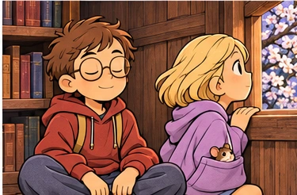
Jack looked out the window, too. The air was fresh and cool.
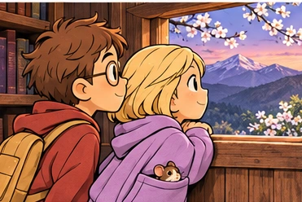
The tree house was in a tree with white flowers. The tree was in a grove of trees on the side of a mountain. Nearby a wild stream rushed downhill.
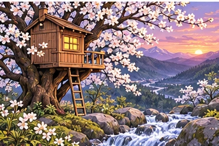
Two ninjas were standing on rocks near the water. They were staring at the valley below.
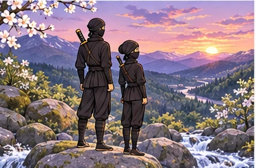
One ninja was tall. The other was short. They wore black pants and shirts. They had black scarves around their heads. And swords strapped to their backs.
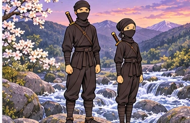
It was exactly like the picture in the book.
Jack crouched below the window.
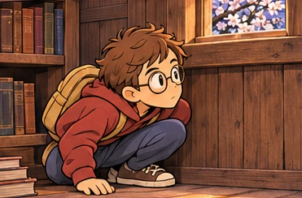
“Be careful,” he whispered. “Don’t let them see you.”
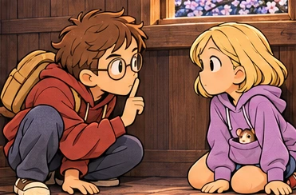
“Why not?” Annie whispered back.
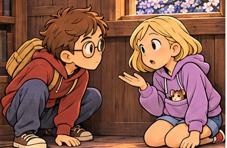
“They might think we’re some kind of enemy,” said Jack quietly.
Annie crouched beside him.
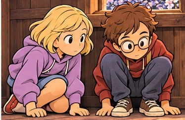
Jack pushed his glasses into place. Now he was going to look at the ninja book.
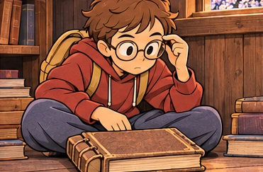
He picked up the book. He turned to the beginning. He read:
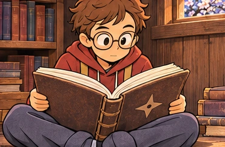
Very little is known about the shadowy warriors called ninjas. Historians believe that ninjas lived in Japan between the 14th and 17th centuries. Both men and women were ninjas. Sometimes they fought to protect their families. Sometimes warlords hired them to be spies.
“Wow,” whispered Jack. “We’re in Japan, hundreds of years ago.”
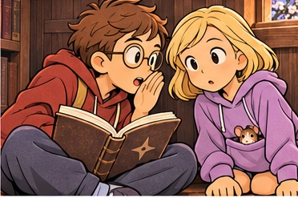
Jack opened his backpack. He pulled out his notebook and pencil. He liked to take notes. He wrote:
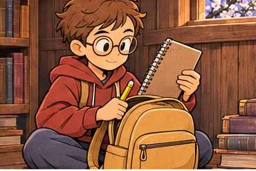
ninjas were warriors in old Japan
“Jack,” whispered Annie. “They’re looking up. I think they know we’re here.”
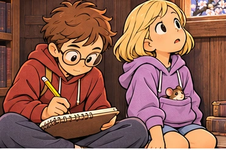
Jack peeked over the windowsill. His eyes met the dark eyes of the tall ninja.
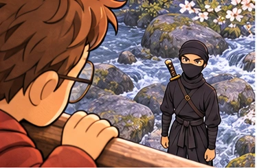
“E-hy!” the ninja cried. He dashed toward the tree. The other ninja followed.
“Oh no!” said Annie.
“We’ve got to go!” Jack said. “Where’s the Pennsylvania book?”
He and Annie looked around wildly.
But where was the book about Pennsylvania? It had the picture of the Frog Creek woods in it. Jack and Annie couldn’t get home without it.
“It’s not anywhere!” cried Annie.
“We’ve got to do something. Fast!” said Jack. “Pull up the ladder!”
He and Annie grabbed the top of the rope ladder. They pulled the ladder into the tree house.
But the tall ninja leaped at the tree trunk. Then he started climbing up the tree! The short ninja followed. They climbed just like cats!
Jack and Annie huddled in a corner.
The ninjas climbed into the tree house. Neither one made a sound.